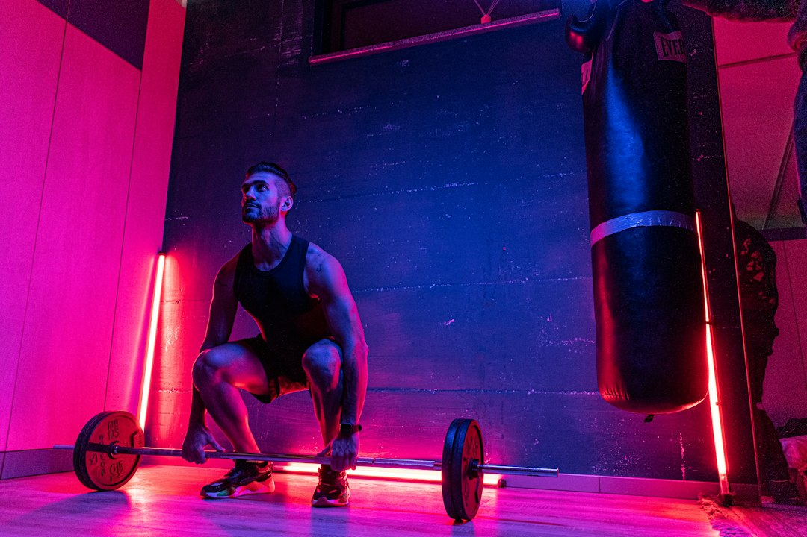

Come AresAI rivoluziona il lavoro di Personal Trainer, Palestre e Atleti con l’AI vocale e la dieta fotografica

Innovazioni nell’allenamento: come AresAI trasforma il lavoro di Personal Trainer, Palestre, Fitness Coach e Atleti nel 2024-2026
- La digitazione manuale di carichi e serie durante l’allenamento riduce efficienza e focus.
- Tracciare alimenti e calorie è un processo noioso che penalizza risultati e motivazione.
- AresAI integra Voice Coach e Dieta Fotografica multimodale per liberare tempo e potenziare il training.
Analisi approfondita della notizia e delle implicazioni operative
Il settore fitness si trova oggi al crocevia tra tradizione e innovazione tecnologica: i professionisti come Personal Trainer, gestori di palestre e Atleti devono affrontare un crescente carico operativo legato alla gestione manuale dei dati di allenamento e nutrizione. Guardando ai prossimi 24 mesi, la domanda di soluzioni integrate, user-friendly e basate sull’intelligenza artificiale cresce in parallelo alla necessità di ottimizzare ogni minuto di allenamento.
Le consuete attività di inserimento dati, come la digitazione di carichi, ripetizioni e serie, rallentano i flussi operativi e interrompono il focus durante le sessioni fitness. Inoltre, la rilevazione delle calorie e degli ingredienti assunti richiede una meticolosa catalogazione che molti Atleti e Coach percepiscono come noiosa e ripetitiva, generando dispendio di tempo prezioso e potenziale perdita di motivazione.
Le conseguenze e i costi di non agire
Continuare a gestire manualmente serie, carichi e dati alimentari comporta diversi svantaggi competitivi e operativi. Da un punto di vista umano, l’interruzione del flusso di allenamento per cercare di ricordare o annotare dati allunga inutilmente la sessione, riducendo il focus e la qualità del training. Questa distrazione nel momento cruciale diminuisce la performance e può generare errori nel calcolo di volumi e progressioni.
Dal punto di vista aziendale di palestre o studi di personal training, il tempo trascorso dal cliente e dall’allenatore nella burocrazia digitale si traduce in minore engagement e insoddisfazione. Inoltre, il tracking nutrizionale tradizionale, basato sulla digitazione o sull’uso di app separate poco integrate, rende difficile ottenere una visione precisa e aggiornata, con conseguenti errori nel bilancio calorico e nutrizionale.
Questi problemi si tradurranno in una perdita di competitività e in un aumento dei costi indiretti, rallentando l’adozione del fitness smart e digitale che i nuovi trend di mercato predicono come indispensabili per il 2026.
Come AresAI risolve il problema
AresAI, il SaaS innovativo di RM Studio, nasce proprio per rispondere a queste sfide operative con due funzionalità chiave integrate nativamente:
- Voice Coach H24 su QR Code sul rack in sala pesi: consentendo agli utenti di interagire a mani libere, dettando carichi e serie senza interrompere il ritmo d’allenamento. Il sistema risponde vocalmente in tempo reale, riducendo drasticamente le distrazioni e migliorando la qualità del workout.
- Dieta fotografica multimodale istantanea: basta scattare una foto al piatto per ottenere il riconoscimento istantaneo dei nutrienti, calorie e grammi. Questo elimina completamente la necessità di digitare manualmente ogni singolo alimento, accelerando il processo e migliorando la precisione del tracking alimentare.
Grazie a queste innovazioni, AresAI libera tempo e attenzione del Personal Trainer e dell’Atleta, aumentando il rendimento delle sessioni e incentivando una gestione moderna e dinamica del percorso fitness. L’offerta differenziata, con Atleta PRO a 19€/mese e Coach Hub a 99€/mese per i professionisti, la rende accessibile e scalabile per tutte le dimensioni di palestre e studi.
| Caratteristiche | Gestione Tradizionale | Con AresAI |
|---|---|---|
| Input dati allenamento | Manuale, digitazione su app/tablet | Vocale, interazione hands-free via QR Code |
| Tracking alimentare | Inserimento manuale calorie e grammi | Riconoscimento fotografico istantaneo (foto piatto) |
| Focus durante allenamento | Spesso interrotto da inserimenti manuali | Continuo grazie a input vocali e senza distrazioni |
| Precisione dati | Dipendente dalla memoria e attenzione dell’utente | Automatizzata tramite AI multimodale e voce |
| Costo mensile | Nessun investimento diretto ma elevato costo opportunità | Prezzi da 19€/mese a 99€/mese con funzionalità premium |
💡 Ti è stato utile questo approfondimento?
Condividilo con un collega o un amico del settore Personal Trainer, Palestre, Fitness Coach e Atleti a cui potrebbe interessare!
FAQ - Domande frequenti per professionisti del fitness
1. In che modo AresAI migliora la precisione dei dati nutrizionali rispetto ai metodi tradizionali?
AresAI utilizza un sistema di intelligenza artificiale multimodale in grado di riconoscere istantaneamente gli ingredienti e le calorie di un piatto semplicemente analizzando una fotografia, eliminando errori umani da inserimenti manuali o dimenticanze.
2. È necessario un hardware particolare per utilizzare il Voice Coach H24?
No, il Voice Coach funziona tramite un semplice QR Code posizionato sul rack in sala pesi, accessibile da qualsiasi smartphone connesso. Non sono richiesti dispositivi hardware dedicati.
3. Come si integra AresAI nella routine quotidiana di un Personal Trainer o di un atleta?
AresAI consente di registrare ogni set e carico senza fermarsi o distrarsi, oltre a monitorare l’alimentazione in pochi secondi. Questo si traduce in una routine più fluida, efficiente e motivante sia per il Coach sia per l’utente finale.
Inizia Subito
Atleta PRO a €19/mese o Coach Hub per Personal Trainer a €99/mese.
Fonti Ufficiali e Risorse Esterne
Scopri l'Intelligenza Artificiale per la tua attività
Ottimizza i processi e aumenta le vendite con le soluzioni B2B di RM Studio.
Scopri AresAI